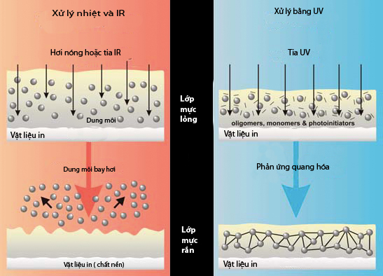
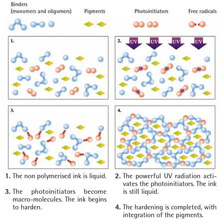

Mực in uv ( violet ultra ): Thành phần cấu tạo và cách sử dụng trong quá trình in
Môi trường kinh doanh hiện đại với áp lực cạnh tranh ngày một gia tăng buộc doanh nghiệp luôn tìm kiếm giải pháp cung cấp sản phẩm và dịch vụ tới khách hàng nhanh hơn, rẻ hơn, và tốt hơn đối thủ. Trong các giải pháp nằn nâng cao sức cạnh tranh, thì giải pháp thay đổi công nghệ, vật liệu hiện đại hơn có ý nghĩa quan trọng và mang tính quyết định. Với ngành công nghiệp in, ngoài việc cạnh tranh với các ngành truyền thông điện tử, việc cạnh tranh giữa các doanh nghiệp in với nhau ngày càng gay gắt. Trong khi đó, công nghệ in đã trải qua những thay đổi đáng kể với những tiến bộ được áp dụng. Mộtquá trình chuyển đổikỹ thuật từquá trìnhtương tựsang kỹ thuật số,cùng vớithay đổi cáckỹ năngthủ côngsang kiểm soátquá trìnhdựa trên máy tính.Cùng với việc thay đổi công nghệ, thiết bị trong sản xuất in, vật tư sử dụng cũng có nhiều thanh đổi mang tính cách mạng, trong đócó sự thay đổi của mực in. Nhiều năm qua, chúng ta sử dụng nhiều phương pháp in khác nhau, nhưng chúng vẫn chỉ sử dụng các loại mực in cơ bản giống nhau, như mực gốc dầu,mực gốc nước và những năm gần đây là mực UV(Violet Ultra).Mực UV hiện nay đang được sử dụng khá phổ biến và có xu hướng phát triển trong tương lai. Tuy nhiên, để hiểu rõ về bản chất của loại mực này như thế nào, sử dụng chúng sao cho đạt hiệu quả nhất trong thực tế thì vẫn còn nhiều vấn đề đặt ra. Mực UV được nhiều người nhắc đến như “in UV”, “công nghệ in UV”, nhiều sản phẩm được in bằng loại mực này.
Vậy mực UV là như thế nào, nó khác gì so với các mực khác, sử dụng ra sao, những phương pháp in nào dùng được và dùng nó như thế nào? Để phần nào làm rõ những câu hỏi trên, chúng tôi xin giới thiệu những nét cơ bản cốt lõi của nó, qua đó giúp cho những ai quan tâm có những hiểu biết cơ bản về mực UV, cách sử dụng, bảo quản trong thực tế. Do hạn chế khuôn khổ, bài viết chỉ phác thảo những điểm chính của công nghệ này:
• Thành phần cấu tạo
• Quá trình khô
•Đèn chiếu UV
• Hồ sơ mực và thuộc tínhcơ bản của loại mực UV
• Sự an toàn sức khỏe đối với người sử dụng
• Xử lý sự cố.
MỰC UV VÀ ỨNG DỤNG CỦA NÓ
1. Mực UV là gì
Mực in UV (Violet Ultra) làloại mực khi in chúng được làm khô bằng cách chiếu tia UV. Nó vẫn là mực in trên các loại vật liệu, nhưng mực khô thông qua một quá trình hoàn toàn khác. Thay vì các dung môi trong mực bay hơi vào không khí và hấp thụ vào giấy, mực UV khô (curing) qua một quá trình quang hóa. Khi mực được tiếp xúc với tia cực tím (UV), chúng từ một chất lỏng, hoặc sệt, thành rắn lại. Có rất ít sự bay hơi của dung môi và hấp thụ mực vào các vật liệu. Một trong những lợi thế lớn nhất của mực UV là có rất ít khí thải của các hợp chất hữu cơ dễ bay hơi ra môi trường vì không có sự bay hơi của dung môi giống như với loại mực thông thường. Một ưu điểm khác của in UV là loại mực có thể làm khô trên nhựa và chất nền không xốp khác, mực không có thời gian để ngấm vào giấy. Mực trên điểm in nằm lại trên bề mặt vật liệu, nơi mà nó thể hiện một điểm in (T’ram) sạch ít loang, cuối cùng cho màu sắc rực rỡ hơn.
Chìa khóa để in với loại mực UV thành công là việc xử lý (làm khô) mực UV, để năng lượng tia cực tím đủ xử lý mực mà không làm cho các chất nền quá giòn và cũng đạt được một độ dính ở mức độ chấp nhận trên các chất nền (vật liệu in). Điều này là cực kỳ khó khăn vì mỗi chất nền khác nhau có những đặc điểm rất khác nhau. Không giống như các loại mực thông thường, 100% thành phần của mực nằm trên bề mặt vẫn còn trong màng mực khô. Ngoài ra, trong thực tế còn sử dụng keo phủ bóng UV(clearcoats) trên các hình ảnh in.Phương pháp in với loại mực khô UV là tương đối mới, nhưng rất hứa hẹn.Có thể in với loại mực UV trên các chất nền không thấm thấm hút, chẳng hạn như giấy ép kim loại (Metalized), nhựa, giấy tổng hợp và chất liệu trong suốt (kính lenticular cho các hiệu ứng âm thanh stereo).Những loại mực này bền với ánh sáng mặt trời trực tiếp, vì vậy mực UV là hoàn hảo cho việc in ấn các mặt hàng quảng cáo ngoài trời.Phạm vi ứng dụng của mực UV là rất rộng trên rất nhiều chất liệu.
Mực và chất phủUV (clearcoats) được phát triển vào cuối những măm 1960. Keodán phát triểnchậm hơn một chút, nhưng tiến triển nhanh chóng cho một loạt các ứng dụng. Các động lực ban đầu phía sau việc thương mại hóa công nghệ này là tiết kiệm năng lượng và không có dung môi bay hơi. Những lợi ích này đã được bổ sung bằng năng suất cao và lợi nhuận sau cao hơn có thể thu được ngày càng tăng của ngành công nghiệp. Trước đây, các chi phí của các chất hóa học mới ngăn cản các loại mực, keo phủ và keo dán UV phát triển rộng rãi. Theo thời gian, do tiến bộ của các ngành khoa học, các rào cản đối với công nghệ UV tiếp tục được khắc phục, kỳ vọng công nghệ UV tiếp tục phát triển. Loại mực UV và vecniUV lần đầu tiên được giới thiệu với các ngành công nghiệp in trong những năm đầu thập niên 1970. Hiện nay, việc sử dụng của chúng đã trở nên phổ biến. Công nghệ UV cung cấp một số lợi thế kỹ thuật đáng kể cho các máy in, bất cứ loại quy trình in nào (offset, letterpress, flexo, offset khô, lưới, in phun, phủ véc ni, vv).Việc tăng năng suất xử lý dưới bức xạ UV, tạo điều kiện cho tất cả các loại in trángphủ hoặc hoạt động cắt và gấp tờ inđược thực hiện ngay lập tức sau khi in.Chất lượng in cao độ bóng cao, sức đề kháng vật lý và hóa học tốt.
Quá trình xử lý bằng tia UV không chỉ được áp dụng trong ngành in bằng mực và keo phủ bóng UV, mà còn được sử dụng trong nhiều ngành công ngiệp khác. Kể từ khi ban đầu được giới thiệu trong năm 1960, xử lý UV đã được áp dụng rộng rãi trong nhiều ngành công nghiệp ô tô, viễn thông, điện tử, in, trang trí thủy tinh và nhựa. Xử lý UV thu nhiều tỷ đô la trong ngành công nghiệp trên toàn thế giới, và hiện nay chiếm khoảng 4% thị trường màng phủ công nghiệp. Mực UV và các lớp phủ đầu tiên được sử dụng như là một thay thế tốt hơn đối với loại mực gốc dung môi. Thông thường mực khô bằng cách bốc hơi dung môi. Trong xử lý UV, không có dung môi bay hơi, không gây ô nhiễm môi trường, không làm giảm độ dày lớp phủ. Điều này dẫn đến năng suất cao hơn trong thời gian ít hơn, với việc giảm chất thải, sử dụng ít năng lượng và khí thải gây ô nhiễm. Mực UV được sử dụng trong hầu hết các phương pháp in với nhiều loại sản phẩm phù hợp với từng loại.
In offset sử dụng mực UV cho một loạt các sản phẩm từ các hộp giấy chứa lương thực, làm bóng bìa tạp chí, các ứng dụng như túi thức ăn vật nuôi, sản phẩm thuốc lá và sôcôla. Sử dụng công nghệ này để nâng cao chất lượng bao bì và để thúc đẩy bán hàng. Nhiều loại sản phẩm bao bì kim loại cũng được trang trí bằng mực UV. Loại mực UV hiện nay đang được sử dụng trên máy in coldset. Công nghệ tia cực tím cho phép máy in được dùng để in trên giấy tráng, giấy thường được sử dụng cho quảng cáo.
In letterpressvới các sản phẩm hộp nhựa sử dụng tia cực tím có nhiều loại, thay thế loại mực dung môi và có năng suất cao hơn và hoàn thiện tính năng của sản phẩm. Việc sử dụng mực UV cho phép in letterpress dễ dàng kết hợp với in lưới và in Flexo để in nhãn. Theo cách này, quá trình UV đã cho phép cái tốt nhất của mỗi quá trình in được sử dụng.
In Flexo của các ứng dụng băng (web) hẹp đạt nhanh hơn băng rộng trong in thương mại. Các máy in nhỏ hơn cho phép sử dụng nguyên vật liệu độ nhớt cao. Mặc dù các ứng dụng băng rộng bắt đầu khoảng năm 1990, sau nhiều năm, nó vẫn chưa tìm thấy nhiều sự chấp thuận. Một phần của điều này là do thực tế có nhiều các ứng dụng băng hẹp trên toàn là trên các sản phẩm bao bì thực phẩm.
In ống đồng với mực UV có phát triển nhưng đã không nhận được nhiều sự chú ý. Cho đến khi các động lực thị trường được đưa ra để khuyến khích việc sử dụng các công nghệ, các nhà hóa học đã nỗ lực để phát triển mực UV ống đồng. Đây không phải để nói rằng điều này là không thể, nhưng lợi nhuận trên đầu tư không xuất hiện được đầy đủ vào thời điểm này.
In lưới sử dụng mực UV cho mọi ứng dụng: đề can, áp phích, biển báo, thiết bị điện tử, chai lọ thủy tinh, dệt may, nhãn ô tô và nhiều ứng dụng khác dựa trên xử lý UV, giảm dung môi, khô nhanh, tính in được cải thiện và dễ ứng dụng.
In phun hoặc in kỹ thuật số là một phát triển nhanh cơ hội để dùng mực UV. Sản phẩm khác nhau, từ đơn giản đến phức tạp đang nhanh chóng được giới thiệu.Động cơ in khác nhau đang được điều chỉnh cho nhiều các ứng dụng hàng ngày. Chất lượng in tiếp tục cải thiện và chi phí tiếp tục giảm. Điều này sẽ tiếp tục đẩy mạnh việc áp dụng các công nghệ trong các ứng dụng rộng hơn.
2. Ưu điểm và hạn chếcủa mực UV
- Ưu điểm:
- Mực UV cung cấp cho hình ảnh sắc nét, in chất lượng tốt, bền màu sắc;
- Mực UV có thể được sử dụng trên nhiều loại vật liệu in;
- Mực UV là một quá trình phát ít thải chất hữu cơ bay hơi (VOC);
- Màng mực có khả năng kháng hóa chất và cơ học rất tốt;
- Mực UV cho phép máy in thay đổi công việc nhanh chóng và có nhiều hiệu quả hơn cho công việc ngắn;
- Lớp mực khô hoàn toàn và sẵn sàng để gia công tờ in ngay lập tức;
- Tốc độ sản xuất nhanh hơn và năng suất cao hơn và giảm phế liệu.
- Hạn chế:
- Chi phí mực in cao hơn so với các mực thông thường;
- Chi phí hoạt động cao hơn (đèn UV, đèn thay thế) so với thông thường;
- Một số chi phí vốn bổ sung cho một máy in mới với cấu trúc có khả năng dùng UV;
- Một số máy in không cung cấp một vị trí tốt cho lắp đèn UV, có thể dẫn đến rò rỉ ánh sáng vào ống cao su (in offset), lô mực hoặc bản in;
- Mực trong trạng thái ướt chưa khô gây kích thích da và mắt;
- Mực UV thường có khả năng sử dụng (tuổi thọ) ngắn hơn, thời hạn sử dụng (khoảng 6 tháng) và yêu cầu sử dụng và bảo quản nghiêm ngặt hơn (như nhiệt độ, tiếp xúc với ánh sáng tia cực tím) so với mực thông thường.
3. Một số vấn đề liên quan đến mực UV
Máy in. Trong hầu hết các máy in UV, đèn UV gắn sau mỗi trạm in để cung cấp cho xử lý liên trạm. Điều này có nghĩa là lớp mực in sau chồng lên lớp mực trước đã khô (dry-trapped) và màu đậm hơn, cứng hơn vì màu in trước bị chiếu xạ nhiều lần. Điều này là đúng cho cả máy in cuộn và tờ rời.
Bảo quản mực in.Ánh sáng tia cực tímđi lạc, có thể làm khô sớm mực in bởi sự tiếp xúc quá mức của các loại mực, ngay cả khi chưa mở lon. Không bao giờ lưu trữ mực UV bên ngoài, có ánh sáng mặt trời trực tiếp hoặc trong nhà kho, nơi nhiệt độ thường xuyên có thể vượt quá 38oC. Nếu có thể, thời hạn sử dụng sẽ được mở rộng rất nhiều nếu mực có thể được lưu trữ dưới 26oC.
An toàn.Vấn đề an toàn phòng máy in được quan tâmbình thường như máy khác, hệ thống UV có hai vấn đề an toàn đặc biệt là đèn UV và các loại mực UV. Đèn UV có thể gây ra thiệt hại mắt nếu nhìn trực tiếp vào chúng. Đèn UV nên luôn luôn được che chắn để bảo vệ người sử dụng máy in, cũng như ngăn chặn khô sớm do ánh sáng tia cực tím đi lạc. Mực UV có một số vấn đề xử lý đặc biệt. Nhiều năm thực tế cho thấy rằng sản xuất với loại mực UV là an toàn, nhưng chúng phải được ứng xử bằng sự thận trọng. Một số người bị phát ban da (dị ứng) khi tiếp xúc với các thành phần của loại mực UV. Không phải ai cũng nhạy cảm với các mực, một số người tỏ ra ít phản ứng, một số nhạy cảm phản ứng ngay lập tức, và một số cho thấy dị ứng sau khi tiếp xúc lặp đi lặp lại. Những vấn đề này được xử lý bằng cách an toàn thích hợp. Ví dụ, găng tay không thấm nên luôn luôn đeo khi xử lý hoặc làm sạch mực. Mực tràn phải được làm sạch ngay lập tức. Bất kỳ sự tiếp xúc của mực với làn da không được bảo vệ nên ngay lập tức rửa sạch bằng xà phòng và nước.
Trên máy in, loại mực UV khá khác so với mực dầu thông thường và máy in cần kiểm tra các lô mực, cao su, bản và hệ thống làm ẩm để đảm bảo rằng tất cả các thành phần phù hợp lẫn nhau. Ngoài ra, máy in dùng vật liệu rửa cho mực UV thường rất khác nhau so với mực dầu. Đây có thể là một vấn đề cục bộ cho việc dùng mực UVhỗn hợp, tất cả mọi thứ được thiết lập trên máy in để chạy lô thông thường và cao su với mực UVhỗn hợp, các máy in sử dụng chất làm sạch hoạt tínhcó thể gây phồng lô. Vật liệu làm sạch mực UV hỗn hợp cần phải được kiểm tra cẩn thận, trước khi dùng trên máy in, đảm bảo rằng chúng làm sạch các loại mực và không phồng các lô.
Chi phí.Chi phí cho việc in UV offset có thể được chia thành ba loại chính: 1) Các chi phí liên quan đến máy in (bao gồm cả mua máy mới, chuyển đổi máy in UV khác hay sửa đổi máy in);2) chi phí mực in; 3) và chi phí vận hành (các tiện ích, dung dịch làm ẩm, vv).
- Chi phí liên quan đến máy in.Một máy in để in được mực UV thường có chi phí cao hơn máy in thường khoảng 5-10%. Chi phí của việc thêm khả năng UV cho máy in mới có thể ít hơn so với chuyển đổi một máy in hiện có, bởi vì, máy in hiện tại phải di chuyển một số bộ phận thông thường để nhường chỗ cho khả năng UV. Ngoài ra, máy in mới có thể được thiết kế cấu tạo với nhiều tính năng UV thân thiện.
- Chi phí liên quan đến mực in.Loại mực UV thường đắt hơn 2-3 lần so với mực in offset gốc dầu thông thường, do thành phần của loại mực UV phần nào làm cho khác biệt này.
- Chi phí liên quan đến vận hành.Trong khi loại mực UV thường đòi hỏi các dung dịch làm ẩm, lô mực và cao su offset riêng phù hợp, tuy nhiên, sự khác biệt giữa chi phí vận hành so với loại mực thông thường là không quan trọng đối với những vấn đề này. Loại mực UV hỗn hợp được thiết kế để chạy với các hệ thống làm ẩm, lô và tấm cao su như mực thông thường. Mực UV hỗn hợp không có chi phí vận hành đặc biệt. Năng lượng để chạy đèn UV công suất cao cộng với chi phí thay thế thường xuyên của đèn thạch anh UV có thể là đáng kể.
THÀNH PHẦN CẤU TẠO VÀ BẢN CHẤT HÓA HỌC QUÁ TRÌNH KHÔ CỦA MỰC UV
1. Thành phần cấu tạo của mực UV
Thành phần cấu tạo của mực UV tương đối khác với loại mực thông thường, mực này được sấy khô/ xử lýbằng tia UVnên đòi hỏi mực nàyphải có chứa hai thành phần đặc biệt:1)Chất kết dính (Oligomers), nó là chất liên kếtvà có thể là hợp chất acrylate (R-O-CO-CH=CH2) như: acrylatedurethane; epoxy acrylated; và monome acrylat); 2) Chất khơi mào/ khởi xướng (Photoinitiators)chúng có thể là xeton thơm hoặc este,acetophenones,các dẫn xuất benzoic hoặc ketals benzyl.Chức năng của nó như là một chất bắt tia UV, hấp thụ năng lượng của các photon ánh sáng UV- và kết quả là tự phátphân hủy của các chất khởi xướng thành các mảnh có hoạt tính cao được gọi là gốc tự do.Những mảnh vỡ bắt đầu một chuỗi trùng hợp với tốc độ lớn, dẫn đến một quá trình polyme hóa làm rắn màng mực.Tùy theo các phương thức in được sử dụng, loại mực UV sẽ có các chất cụ thể khác nhau, tuy nhiên, chúng đều được hình thành từ các thành phần sau:
|
Thành phần (Component) |
Hàm lượng (Content) |
Chức năng chính (Principal functions) |
|
Oligomers (Chất kết dính) |
40 - 50% |
Chất quyết định các tính chủ yếu của mực (ổn định in, tính năng in, sức đề kháng, vv) |
|
Pigments (Chất màu) |
15 – 20% |
Chấttạo màu sắc cho mực và đạt được độ bền màu yêu cầu |
|
Monomers (Chất liên kết) |
5 – 20% |
Chấtcho phép điều chỉnh độ nhớt được. Chúng ảnh hưởng đến tính chất cuối cùng của màng mực |
|
Photoinitiators (Chất nhậy sáng) |
5 – 12% |
Thành phần nhạy cảm bức xạ tia cực tím, khơi mào phản ứng polyme hóa của màng mực |
|
Additives (Chất phụ gia) |
1 – 8% |
Các chất có ảnh hưởng đến tính chất cụ thể, chẳng hạn như lưu biến, độ bám dính, đềkháng, vv |
Loại mực UV gồm một hỗn hợp của hợp chất phản ứng monome, oligomer, pigment và chất đặc biệt cần thiết trong mực UV là chất nhậy sáng photoinitiator. Ánh sáng cực tím được hấp thụ bởi các photoinitiator, chuyển đổi năng lượng ánh sáng thành năng lượng hóa học. Năng lượng hóa học này sau đó gây ra sự trùng hợp của hỗn hợp monome/ oligomer thành một màng mực khô. Các monome và oligome có vai trò khác nhau. Các monome được sử dụng để kiểm soát độ nhớt và tốc độ xử lý (khô). Các Oligomer cho tính chất tạo màng cơ sở của mực. Cấu trúc hóa học cốt lõi của các oligomer tạo ra các đặc tính như độ cứng, tính linh hoạt, dẻo dai, bám dính, thấm ướt chất màu, khả năng tương thích mực/ nước, tốc độ xử lý, vv. Ngoài ra, chúng có các chất điều chỉnh khác nhau để kiểm soát năng lượng bề mặt màng mực in, tạo bọt, phun sương, độ nhớt hoặc thấm ướt chất màu.
2. Quá trình khô của mực in
Trong bất kỳ quá trình in nào cũng gồm 2 giai đoạn khác nhau: Chuyền mực lên vật liệu cần in dưới dạng các hình, ảnh, chữ; và quá trình khô của lớp mực đó. Kết quả cuối cùng là lớp mực trên vật liệu phải có hình dạng theo yêu cầu và lớp mực khô bám chắn trên vật liệu, bền vững trong quá trình sử dụng. Quá trình khô của mực sau in xẩy ra với nhiều cách khác nhau, tùy theo tính chất của mực in và bề mặt vật liệu nhận hình ảnh. Quá trình này được chia thành: khô lý tính là quá trình chất liên kết trong mực thấm hút vào vật liệu và bay hơi thoát khỏi lớp mực, thường xử lý bằng nhiệt. Trái với một quá trình sấy nhiệt, xẩy ra bằng cách làm bay hơi dung môi chứa trong mực, xử lý khởi tạo một phản ứng hóa học trong các hợp chất của mực, dẫn đến một phản ứng trùng hợp, đó là khô hóa tính, quá trình xẩy ra phản ứng hóa học giữ các chất có trong thành phần mực. Trong khô hóa tính có hai trường hợp: 1) các chất liên kết trong mực tác dụng với ô xy trong không khí dưới tác dụng xúc tác của các chất làm khô; 2) các chất trong mực tự phản ứng kết lưới ngang dưới tác dụng của tia UV.

Hình 1: Hai quá trình khô: lý tính do xử lý bởi nhiệt và khô hóa tính do xử lý bởi tia UV
3. Bản chất hóa học quá trình khô (curing)bởi UV
Quá trình khô (còn gọi là xử lý - curing) hóa học bằng tia UV là quá trình lớp mực trên tờ in sau khi in được làm khô lại dưới tác dụng của tia UV. Ngay sau khi phản ứng được kích hoạt bởi các tia UV, lớp chất lỏng "liên kết ngang" với nhau tạo một màngrắn trong thời gian rất ngắn. Đa số các lớp mực hoặc keo phủ UV tạo ra một lớp màng còn lại 100%, tức là chúng đã xử lý hầu như không mất độ dày lớp mực, keo phủvàkhông thải chất hữu cơ bay hơi (VOC).Loại mực UV khô qua một phản ứng hóa học polyme bắt đầu tiếp xúc với bức xạ tia cực tím. Phản ứng này xảy ra trong một phần nhỏ của một giây, có thể được chia nhỏ thành các bước khác nhau(xem hình 2). Mực dạng lỏng (sau khi in) (1) được tiếp xúc với bức xạ tia cực tím UV, bằng cách đi qua dưới đèn cực tím được trang bị trong quá trình in (2). Tiếp xúc này tạo ra các phản ứng hóa học bởi các photoinitiators nhạy sáng trong mực. Các photoinitiators tạo ra từ phản ứng được gọi là gốc tự do khơi mào phản ứng (free radicals). Các gốc tự do tạo ra một chuỗi phản ứng giữa các chất kết dính oligomer và monomer trong việc tạo kết lưới ngang tạo cấu trúc mới (3). Mực dạng lỏng cứng lại. Vào cuối của phản ứng, một mạng lưới bền vững được hình thành kết hợp các chất màu (pigments) (4).
Các loại mực khô bởi một trùng hợp acrylic làrất nhanh. Không giống như trong quá trình sấy bằng quá trình oxy hóa nó cần nhiều thời gian đểhoàn toàn khô của màng mực, phản ứng nàyhoàn toàn trong một phần nhỏ của một giây.Điều này có nghĩa là trong vài giây, tờ in đã sẵn sàng cho quá trình hoàn thiện, không cần thiết phunbột.
Hình 2: Các giai đoạn diễn ra trong quá trình khô hóa tính do xử lý bởi tia UV
- Binders (Monomers and oligomers): chất liên kết
- Pigments: chất màu
- Photonitiatiors: chất nhậy sáng
- Free radicals: gốc phản úng tự do
(1). Lớp mực lỏng chưa có phản ứng polymer
(2). Chiếu đủ tia UV kích hoạt các chất khơi mào (photoinitiators), lớp mực vẫn lỏng
(3). Chất khơi mào chở thành phân tử lớn hơn, mực in bắt đầu đóng rắn
(4). Quá trình đóng rắn hoàn tất với sự hòa nhập của các pigment
- Ví dụ về quá trình hóa học xẩy ra khi xử lý bằng UV
Khi quá trình chiếu tia UV lên hợp chất photopolymer nhậy sáng, các gốc tự do sinh ra khi TPO (diphenyl (2,4,6-trimethylbenzoyl)-phosphine oxide - TPO) được tiếp xúc với bức xạ tia cực tím có khả năng có thể kết hợp và phản ứng với các monomer PEGDA (Poly(ethylene glycol) diacrylate - PEGDA) (Hình 3). Phản ứng liên kết ngang này bao gồm hai bước chính: (1) Chất khơi mào/ khởi xướng (photo-initiator) (TPO) đã được tiếp xúc với bức xạ tia cực tím và một phân tử khởi xướng đã được phân hủy để tạo ra hai gốc; (2) Các gốc tự do phản ứng với một monomer, từ đó bắt đầu một chuỗi PEGDA bằng cách mở liên kết cacbon-cacbon của nó. Các chuỗi polymer dây chuyền qua các phản ứng với mối liên kếtvinyl(R-CH=CH2) có sẵn trên monome, hoặc trên các chuỗi polyme khác. Kết quả của việc này, hai chuỗi kết hợp để tạo chuỗi polymer hoàn toàn và làm chấm dứt việc phát triển polymer.
Sự trùng hợp lớp polymer nhậy sáng có thể được kiểm soát bằng cách thay đổi cường độtia UV, nồng độ chất khơi mào, thời gian tiếp xúc (chiếu UV), hoặc nồng độ monomerPEGDA .
BÀI VIẾT LIÊN QUAN
- 10 sai lầm dạy con của bố mẹ khiến trẻ trở nên rụt rè, hư hỏng, thất bại trong tương lai
- TRANH CANVAS ĐẸP HỘI TỤ ĐẦY ĐỦ CÁC YẾU TỐ CHO NỘI THẤT CHUNG CƯ
- Lựa chọn tranh theo tuổi
- Mẹo Nhỏ Giúp Nhà Bạn Luôn Gọn Gàng Và Ngăn Nắp
- Mực in uv ( violet ultra ): Thành phần cấu tạo và cách sử dụng trong quá trình in
- Ai Nói Trắng Đen Nhàm Chán?